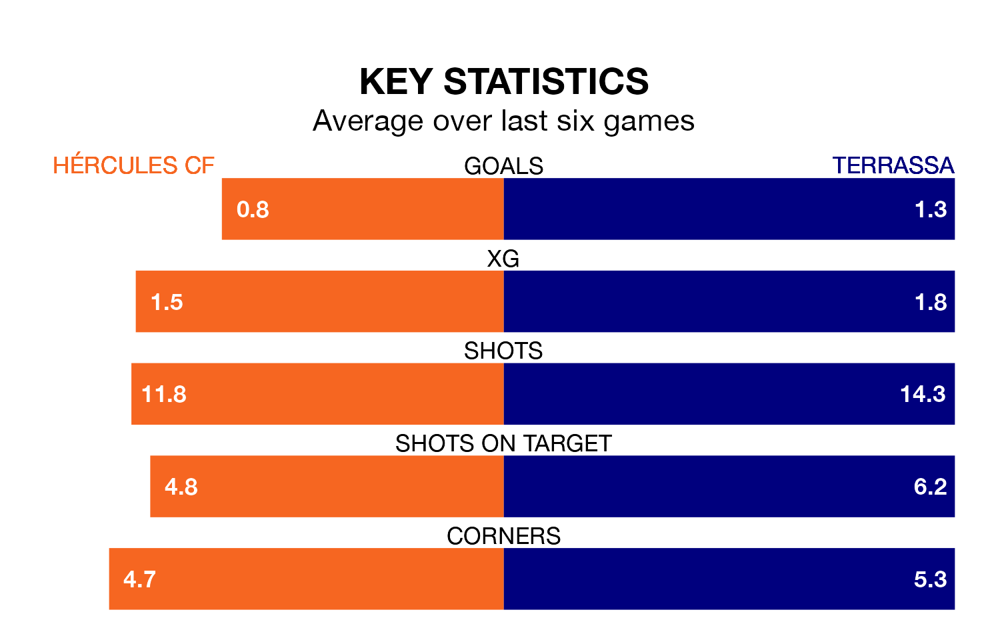

Hércules CF face Terrassa at the Estadio José Rico Pérez on late Sunday looking to secure a first win in six Segunda División RFEF Group 3 games.
Hércules have lost one and drawn four matches since they last earned three points – against Andratx on February 10.
They face a Terrassa side who have won three and lost two over that time.
With 38 goals in 27 games so far this season, Hércules are the league's joint-third-highest scorers with 1.4 goals per game. And they are conceding fewer than average, letting in 26 goals at a rate of 1.0 per game.
Terrassa, meanwhile, are average scorers, with 1.2 goals per game. They have also conceded 1.2 goals per game.
The home side are fifth in the table after 27 games, of which they have won 13 and drawn seven, earning 46 points.
The visitors are two places behind Hércules in seventh, with nine wins and nine draws putting them on 36 points.
In the last three years, Hércules and Terrassa have played each other on three occasions. Terrassa won one of them and they drew the other.
Their last meeting was on November 12, when they played out a 2-2 draw.
Hércules's last match was on March 16, a 0-0 draw against La Nucía.
Terrassa beat CE Europa 4-1 last time out, on March 17, with Sergio Buenacasa Alba (three) and Aythami Perera García on the scoresheet.
Updated: 10:19 (UTC), 22/03/24